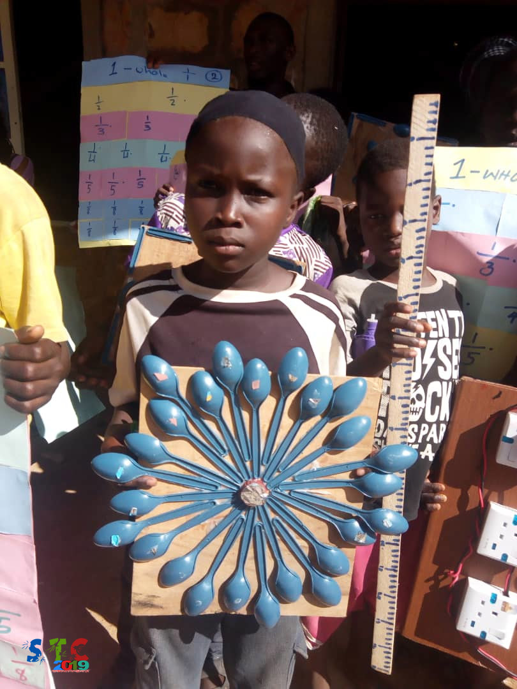

MY PERSONAL SKILLS
Languages and frameworks
- Bootstrap
- CSS
- DAX
- Express Js
- Flask
- HTML
- Javascript
- Node Js
- Mongo DB
- React Js
- SQL
- Python
Softwares and platforms
- Google Suite
- Microsoft Power BI
- Microsoft Suite
- Visual Studio
- Unix OS Commands
- Windows and PowerShell
Side Skills
- Content management
- CCTV architectures
- Creative design skills
- Drone Dynamics
- Logic solving
- Research writing
- Software architectures
- Social media management
- System administration
Spoken Languages
- Chinese (basic)
- Deutsche (basic)
- English (proficient)
- Igbo (proficient)
- Hasua (basic)
- Yoruba (intermidate)
TECH PROJECTS
Here are some of my best beginner projects. Although some of them are currently under-development.
Here's a list of my favorites!
meHeight - Know Your Height

meHeight would be hosted primarily on the web. It works in a simple manner of taking a picture of yourself and instantaneously telling you how tall you are in meters(inches). It utilises computer vision and other machine learning techniques. I began thinking of this project in April 2021 as a project for workplace. I am stuck presently but still working on it. Eventually there will be a paid version. So watch out for it.
Favourite ML Playlist

This is my finest completion of my how I learnt (annd stil learning) the limited techniques/method of how I keep improving my knowledge of machine learning. Furthermore, some of this codes have an a video to explain them further. and PowerPoint presentation.
My Personal Website
Basically, I built my first webiste which you are viewing courtesy of an open source work, who shared his open source project and it's available for free. So while not deep dive and build yours too. Well I will be happy to help at least. The code is available on Github for improvements and translations.
Link NotePad
i Another free time app, this it's an open source note taking manager, and it will be available free. It uses a automatically suggest adding links from similar types of site. The code will be available on Github for improvements and translations.
SOCIAL PROJECTS
I have got some nice collaborations that I have also worked on with many of my friends and colleagues.
Here's a list of my favorites!
Summer Thrive Camp- 2019 (Season 1)
My first social project and it was for Kids who were part of a refugeees community that had fled their homes for years due to insurgency and the innumerable fighting in their home in the North East of Nigeria. The idea of this project was to test a new type of teaching curriculum I developed which is simply code-named "STAMS" meanning "SCIENCE, TECHNOLOGY, ART, MATHEMATICS & SPORT; of course its worked like MAGIC !!! here If you find it interesting then dont forget to hit me up here via email so we can do more for the community.
Energy4Me 20/20/2000

One of my feel-good-projects implemeted in the final year of my undergraduate studies. We targeted over twenty (20) secondary schools around the locality of my University. The aim of the proejct was to show the students the need to pursue a career in Energy Industry. You can check out the report of this impactful work, here ! If you find it interesting then dont forget to hit me up here via email
SOME NUMBER, AND MY GOAL
All I want is to use my learn skills to improve a little piece of my world (more especially my local village). Work, challenges and achievements are very important because they keep us going, but you sometimes need to share your progresses with loved-ones.
- +1.000 Play Store App reviewed
- Years of experience
- 10 Github repositories
- +2.000 Hours of Learning